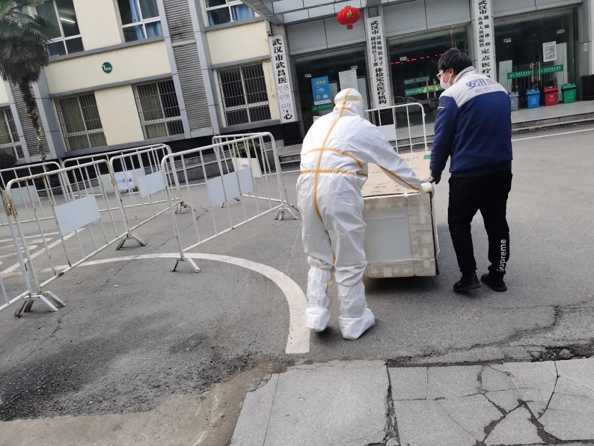

武汉，这些天的街头巷尾（之三）
原文链接 备份链接 我先跳过2月21日-26日，在武汉的街头见闻，将27日-29日，2月这最后三天的情况，日常见闻发在这里吧。 此前的文章 《武汉，这些天的街头巷尾》，以及《武汉，这些天来的街头巷尾（之二）》。 2月27日 26号，武 …

一座看似静止的城市
背后涌动着生命希望
上午九点，钱志红准时走进自己的办公室，自武汉疫情爆发以来，他几乎没有停止过工作。将近一个月时间里，作为国美安迅物流湖北分公司的总经理，突如其来的援助任务要求他必须像钉子一样钉在武汉。
“武汉需要我们，取暖器、空调、冰箱、洗烘一体机这些物资都是一线急需的，我们不仅要送到，还要负责安装。”已经连续加班多日的钱志红，声音略显沙哑。但谈及这段时间的援助工作，也难掩兴奋，目前他的重点工作是援建方舱医院。“不止我们，还有很多企业也在现场，有的负责改造供水供电，有的负责安装床铺，我们的任务是空调、电视的运送安装。”

△钱志红为武汉火神山医院运送国美捐赠物资
由于现场基础设施不完备，国美送装工程师往往要从早上8点一直工作到晚上11点。谈及工作强度，钱志红笑了笑：“大家都在超负荷运转，没人喊累，现场看到还有很多和我们一样的人在工作，更有干劲儿了。”
与外界“武汉暂停”的感受不同，在钱志红眼里，看到的是一个个鲜活而丰满的个体，正是他们最大限度发挥了专业精神，才保证了武汉没有断水断电，人民基本生活依然有保障，甚至创造了大型医院瞬间拔地而起的奇迹。
疫情之下 双面武汉
钱志红第一次去医院执行配送安装任务，正值武汉疫情的爆发期，他们的任务是向医院配送一批洗烘一体机。临出发前，他要求参与这次配送的所有人做好防护工作。“基本都有家庭，这种情况下天天跟医院打交道，必须要做好准备。”但即使这样，坐在安迅物流运输车上的钱志红，还是有些紧张。但当钱志红看到在医院门口焦急等待、全副武装的医护人员，他的疑虑瞬间被打消了。“他们比我们难，每天把自己裹在厚厚的防护服里还有很多病人要照顾，那可是直接接触患者啊。”
最让钱志红感动的还是来自医疗工作者的关心。在一次配送安装任务中，因为设备安装是在隔离区进行，拆卸、搬运和安装的环节较为繁琐，钱志红和同事们在医院逗留了很长时间，临走前，医院扣留了他们的搬运手推车。“都进过隔离区，就别拿走了，等疫情过去了，记得来拿就行。”医院的对接人一边在本子上登记信息，一边对钱志红说。“我们实际上是准备把手推车消完毒就带走的，但是为了我们的安全，那位医护人员还是把车留下来了，我想和他握个手，但是不能。”

△国美安迅物流黄一平到武昌医院疫区病房送冰箱，帮助重症患者储存丙种球蛋白药品
“歇会吧，慢慢来，不着急”、“也没给你们准备水，特殊阶段，医院的东西不能让你们接触”、“回去可一定注意消毒”，这是钱志红在医院经常听见的话。疫情之前很少有人关注到这些细节，疫情之中，这些叮嘱，让钱志红感到很温暖。“有些事儿，一定是要有人去做的，我觉得我的城市垮不了。武汉，九省通衢，我接触了很多一线的人，没有人退缩，大家都在相互鼓励，战斗在一起，我不在乎外界怎么看我们，我眼里的武汉并没什么两样。”
空无一人的街道，安迅物流的运输车正在行驶，红色条幅上写着“国美支援，武汉加油”如生命血液依然在武汉的血管里流淌。
堵车不复 白衣征战
陈安娜做好车内消毒之后，将车缓缓驶向了武汉的城市主干道。“封城”以来，全部公共交通工具停运。在国美武汉分公司从事广宣工作的陈安娜白天是国美支援武汉的记录者，早晚开上私家车她就是接送医疗人员上下班的专属接驾司机。
“十七八公里，他们都是走路上下班，这个我真的特别心酸。家远的有二三十公里，每天走路上班，你能想象吗？他们一天还要看一百多个病人，上了十几个小时的班，却只能在冬夜里步行几个小时回家。医生守护我们，我也要尽一份力守护他们。”陈安娜加入了汉口私家车义工车队，这个车队里有200多名私家车主，自告奋勇，每天跨越13个城区，接送那些下班最晚、上班最早的白衣天使。

△陈安娜做志愿者接送医护人员
陈安娜成为志愿者后，常常天不亮就要出发，半夜才能休息。一路上，原本拥挤的马路不见了，除了依然站岗的路灯，整个城市空荡荡的。她竟然开始回味从前堵车的日子，“真想再犯一次怒路症。”十分钟后到达指定医院，陈安娜凝望着奔波忙碌的医护人员，响着特有警笛的救护车，焦急守候的家属，“这基本就是武汉的现状，希望它快点好起来。”
在做志愿者的十多天中，陈安娜见到了不同的医护人员，他们大多数说起话来都是有气无力的，有的年纪轻轻，有的头发花白。即使隔着口罩，陈安娜也能感受到他们的疲劳。还有的人一上车就睡着了，好几次，陈安娜还看到医护人员脸上红色的勒痕和布满血丝的眼睛……
虽然全国的医疗物资和人员不断地涌向武汉，可在陈安娜看来，医护人员的工作压力依然很大，但即使这样，这些疲惫的人都不忘时刻履行自己的职责。“有的人下车前会问我还需不需要口罩，提醒我要注意防护，还有人硬是拿着消毒水把自己坐过的地方消完毒才肯走。”
“每天都是在心疼中度过的。”陈安娜说，为了不影响医护人员在车上休息，她总是把车开的平稳些再平稳些。但是车上休息的医生和护士内心却无法平静，因为他们所面对的是没有硝烟的战场，那里有生命的危险，更有生命的希望。
“他们真的是义无反顾地在战斗，看到他们，我很踏实。”陈安娜知道，在这场与疫情的场殊死搏斗中，“白衣天使就是拯救武汉的超级英雄。”
英雄城市 英雄的人
应防控要求，武汉国美的门店已经全部关闭，但是因为城市水电持续供应，为了杜绝安全隐患，从除夕这天15:00闭店开始，武汉国美王家湾店的张晗与同事就承担起了门店消防检查的任务。
为了保证通勤，张晗请朋友骑电动自行车接送自己，每次他从武昌到汉阳，都要经过长江大桥，而这座双向八车道大桥已经不复往日的车水马龙，寂静的车道上，连一辆车、一个人都没有，只有风与张晗擦身而过。生于斯长于斯的张晗，生平还是第一次见到这样悲凉的景象，“说不怕是假的，什么都不敢想，只想快一点赶到门店。”
每到张晗轮岗，平时公交+地铁1小时的单程上班路，骑电动车却需要2小时。张晗说他是自己一个人住，这个春节还没回家见过父母，家人反对继续上班，但他还是执意上班。“这是我的岗位，我有我的责任。”
下班回家，张晗要去超市购买一些生活必需品。在张晗看来，超市营业员更加忙碌，为避免人多聚集，进出超市的人数需要严格限制，超市内要防止扎堆购物，戴着口罩和手套的收银员还要疏导远距离排队。“每个人都还在努力的工作和生活，尤其是这些维持生活正常运转的人们，我觉得他们也是这个城市的英雄。”张晗说。
城市病了，但生活还要继续，疫情之下，每一个人都活成了英雄的样子。
警察、社区工作者、公务员和党员奋战在抗疫一线，但更多的人被迫宅在家里。在一次一次推迟复工和开学时间后，在家办公、在家学习，是当下减少经济损失和学业损失的唯一办法。
一时之间，平板电脑、笔记本电脑成为畅销品。2月以来，武汉国美徐东商城店店长蔡俊刚不断收到用户购买电子设备的需求。“孩子上课急用”、“在家办公给推荐个高性价比笔记本”、“有没有能保护眼睛的平板？”每天他都会收到和回复这样的消息足有上百条。蔡俊刚紧急摸排了门店电子产品货存情况，并把所有品牌和产品功能梳理清楚，一一反馈给有需求的用户。
用两天的时间把用户需求处理好，蔡俊刚还要发消息约定好分批取货的时间，并千叮咛万嘱咐“请不要提前来，避免聚集”。早上7点蔡俊刚就到达店里，先为门店里里外外进行全面消毒和通风，不留任何死角，随后把用户已经预定的产品按照取货的时间和顺序准备好，以便减少用户等待时间。

△为方便用户，蔡俊刚把商品亲自送到用户家
“以前用户来买东西经常聊很久，现在拿了就走了，不敢逗留。”白天忙碌完商品自提，晚上蔡俊刚还要跟踪社群营销进展，并为在家办公的销售人员解答各种问题。“用户的生活需求还是很大，要通过在线的方式及时满足。”
因为频繁的与外界接触，蔡俊刚和张晗一样，并不和家人住在一起，每天都是以视频的方式和妻子孩子“见面”。每次下班，他都会看到武汉长江二桥“武汉加油”的字幕。自从疫情爆发以来，桥上用灯光打出的“武汉加油”，每晚一刻不停地闪耀在长江之上，从“武汉加油”“中国加油”到“武汉必胜”“中国必胜”，灯光照亮了江水，照入了人心，这是灯光，更是希望。
本文仅代表作者观点，不代表本刊立场
推荐阅读
▼


原文链接 备份链接 我先跳过2月21日-26日，在武汉的街头见闻，将27日-29日，2月这最后三天的情况，日常见闻发在这里吧。 此前的文章 《武汉，这些天的街头巷尾》，以及《武汉，这些天来的街头巷尾（之二）》。 2月27日 26号，武 …
原文链接 备份链接 // “在清水里泡三次，在血水里浴三次，在碱水里煮三次，我们就会纯净得不能再纯净”。 托尔斯泰在《苦难的历程》中如此描述人们从革命走向胜利的艰辛过程，在此时，身处武汉的一线医务工作者又何尝不是经历着清水、碱水甚至血水 …
原文链接 备份链接 除了菜品的装卸、运送外，我还要负责为各个医院不同的人群制定不同的菜谱。比如，护士群体需要增加抗疲劳的食材，专家组的菜品可略微清淡，而建筑工人的菜单，则需要大油大荤。 口述 | 石在余 整理 | 刘朝晖 昨晚到今天，我 …
原文链接 备份链接 ▲ 武汉骑手老计说：明天太阳会照常升起。（受访者供图） 经此一役，杨静、华浩、李大双、曹新志、胡启等人都明白了一个道理：这是一场“团战”，那些拯救人们于危难中的英雄，也需要被守护。在他们背后的支撑，是城市新基础设施在 …
原文链接 备份链接 文/六筒 李岩半年前刚去过武汉，和家人去旅游，主要想看看黄鹤楼。那还是夏天，热气蒸得人头上冒烟。高温挡不住蜂拥的游客，摩肩接踵，拥塞的车辆在大道上艰难挪动。“真是个大都市”，她想。 李岩是河北医科大学第二医院呼吸与危重 …